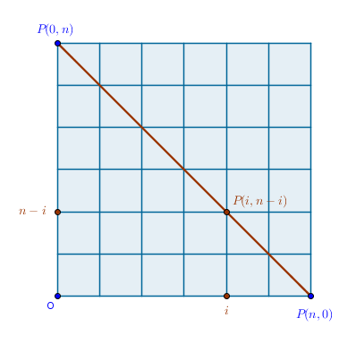
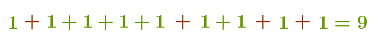

5.1) Permutations
5.1.1) Infinite Supply
5.1.1.1) Interbucket Distributions
5.1.2) Finite Supply
5.1.2.1) Interbucket Distributions
5.1.2.2) \(C(n, r)\) and Permutations
5.1.2.3) \(C(n, r)\) and Interbucket Distributions
5.2) Combinations
5.2.1) Infinite Supply
5.2.1.1) Interbucket Distributions
5.1) Permutations
Recall that in a multiset the order of items does not matter (just like in sets) but the items themselves are allowed to be repeated some number of times:
$$\{1*a, 2*b, 3*c\}$$Even though the individual input items may appear to be distinct:
$$a, b, c$$it is possible to have any number of copies of any one of them.
As such, we will say that we have a finite number of distinct types of items. The number of copies of each distinct type we will call its repetition number. The repetition numbers may be finite or infinite.
A single permutation of a multiset then is an output arrangement made up of distinct input types in which:
- the order of items matters
- any type may have multiple copies (repetitions are allowed)
In an exhaustive list of all the permutations of a set:
- all the copies of all the types must eventually be used
- the sizes of the intermediate \(r-\)arrangements are identical - some finite arbitrary given ahead of time positive integer \(r\)
5.1.1) Infinite Supply
To ensure that we never run out of input items of any and all types to fill in the current position in the output arrangement we will require here that items of any type are to be available in infinite supply - we can have as many copies of any distinct input type as we need.
Scenario:
given a set of three digits: $$1, 2, 3$$ how many different \(5-\)digit order-sensitive arrangements can be constructed if any of the digits may appear in any single output arrangement more than once?
For example, arrangements like:
$$11111 \quad 21213$$are allowed while arrangements like:
$$1 \quad 12 \quad 123$$are not allowed since all of these arrangements are of the wrong size.
Formally:
what is the number of \(r-\)permutations of a multiset of \(n\) items given an infinite supply of each item?
Here we have the following multiset:
$$\{\infty *1, \infty *2, \infty *3 \}$$If we were to construct a single permutation of the above multiset then for every current output position we would fully exhaust the collection of distinct input types in its entirety:
$$1, 2, 3$$candidates for the first choice,
$$1, 2, 3$$candidates for the next,
$$1, 2, 3$$candidates for the next, and the next, and the next choice and so on. The reason we can do this is because of the infinite supply of the input items requirement. In theory then this process can go on forever but we cut it off after some arbitrary finite number of consecutive choices \(r\) - that is how we fulfill the requirement that the size of the output arrangements must be given ahead of time. Verifying that the independence requirement is met, by direct application of MCP we obtain:
$$\begin{equation} \bbox[#e8e8e8,3pt]{p(n, r) = \underbrace{n \times n \times n \times \dots \times n}_{r} = n^r} \end{equation}$$Consequently, the answer to our original problem is:
$$3^5 = 243$$output arrangements.
Example E17
Using the digits: $$1 \quad 2 \quad 3$$ how many different \(1-\)digit passwords can be constructed?
List all such passwords:
$$1 \quad 2 \quad 3$$for a total of:
$$3^1$$passwords.
What about the number of \(2-\)digit passwords?
To list all such passwords we again interpret MCP literally. We fix the choice for the first digit and then "... for each item \(a\) there are \(n\) choices for item \(b\) ...":
$$11 \quad 12 \quad 13$$and we repeat this process for every choice for the first digit:
$$11 \quad 12 \quad 13$$ $$21 \quad 22 \quad 23$$ $$31 \quad 32 \quad 33$$for a total of:
$$3^2$$passwords.
What about the \(3-\) and \(4-\)digit passwords?
Example E18
My bike chain lock has four rings with the digits zero through six embossed on each ring and only one permutation allows the lock to be opened. How long will it take to try all the possible passwords for this lock?
Since here:
$$n = 7, \; r = 4$$there are:
$$7^4 = 2,401$$passwords possible with this lock. If it takes someone \(5\) seconds to set one permutation and then test it then it will take:
$$2,401 \div 12 \approx 200$$minutes or about:
$$3.33$$hours of sustained effort to go through all the permutations possible for this lock.
Example E19
A computer processor can bite, chew and digest \(64\) bits of information at one time. Each bit can take on the values of zero or one only. How many different \(64-\)bit words are in this computer's vocabulary?
Since here:
$$n = 2, r = 64$$the answer is:
$$2^{64}$$different words.
Example E20
A \(10-\)character computer password is to be made up of ten digits, upper and lower case characters of the English alphabet plus one of these special characters: $$S = \{!, @, \#, \$, \% \}, \; |S| = 5$$ How many of these passwords will have a repeated symbol?
To solve this problem we will combine several constructs that we already know about: permutations with and without repetitions, universal set, complement of a set and SCP.
Let \(U\) be a set of all the passwords - the ones that do, set \(A\), and do not, set \(B\), contain a repeated symbol. We note that \(A\) and \(B\) are the complements of each other in \(U\). We know the size of \(U\):
$$|U| = n^r = (10 + 26 + 26 + 5)^{10} = 67^{10}$$Since the items that comprise \(B\) are the \(10-\)permutations of \(67\) distinct items (without repetitions) or permutations of a set, the size of \(B\) is also known:
$$|B| = P(67, 10)$$By SCP then:
$$|A| = |U| - |B| = 67^{10} - \frac {67!}{57!}$$passwords will have a repeated symbol - a very large number.
5.1.1.1) Interbucket Distributions
Though in this section we are dealing with an infinite supply of input items the formula in (1) is also applicable to the distribution of a finite number of distinct items \(r\) among a finite number of distinct buckets \(n\) with the following restrictions:
5.1.1.1.1) each item must be in some bucket
5.1.1.1.2) multiple items per bucket are allowed
5.1.1.1.3) some buckets may be empty
5.1.1.1.4) the order of items within a single bucket is irrelevant
5.1.1.1.5) the order of items across the buckets is relevant
For example, it is possible to distribute the input items \(x\) and \(y\) across two buckets \(b_1\) and \(b_2\) subject to the above restrictions in the following \(2^2 = 4\) ways:
$$b_1[xy] \quad b_2[ \; ]$$ $$b_1[ \; ] \quad b_2[xy]$$ $$b_1[x] \quad b_2[y]$$ $$b_1[y] \quad b_2[x]$$If we add the third input item \(z\) then a total of \(2^3 = 8\) distributions are possible. List them all.
For a proof we first write down the names of all the items. Since each item must belong to some bucket then underneath each item we can always write down the bucket number it is in. For example:
$$x \quad y \quad z$$ $$1 \quad 1 \quad 1$$means that all three items are in \(b_1\). Further:
$$x \quad y \quad z$$ $$1 \quad 1 \quad 2$$means that the items \(x\) and \(y\) are in \(b_1\) while the item \(z\) is in \(b_2\), etc. Now we forget about our original input items \(x, y, z\) and treat the string of bucket numbers (the bottom row) as \(r = 3-\)permutations of a multiset of \(n = 2\) (new) types of input items - bucket numbers. But by the above logic, from (1), the number of such permutations is:
$$n^r$$One practical example of this type of distribution can be found in the game of billiard. By the end of one game all \(15\) numbered billiard balls must be somehow distributed among \(6\) pockets which we can always make distinct via the 2.4 operation:
$$p_1, p_2, \dots , p_6$$Assuming that each pocket is large enough to hold all \(15\) billiard balls, we can have a total of:
$$6^{15}$$distributions.
5.1.2) Finite Supply
Here the input items of distinct types have a finite repetition number. As such, the size of any single output arrangement is equal to the size of the input multiset - that is how we fulfill the requirement that the size of the output arrangements must be given ahead of time.
Scenario:
given three letters: $$M, O, M$$ how many different \(3-\)letter order-sensitive arrangements can be constructed?
For example:
$$MOM \quad MMO \quad OMM$$Formally:
what is the number of permutations of a multiset of \(n\) items given a finite supply of each item?
Here we have the following multiset:
$$MS = \{2*M, 1*O \}, \; |MS| = 3$$Let us assume that we have \(k\) distinct types of input items and that each item of a given type is repeated some finite number of times. Let there be \(r_1\) copies of items of the first type, \(r_2\) copies of items of the second type, \(r_i\) copies of items of the \(i-\)th type and \(r_k\) copies of items of the \(k-\)th type. Since there are \(n\) of such items in total:
$$r_1 + r_2 + \dots + r_k = n$$Note that even if some input item is "repeated" only once - it is perfectly fine - we still count it as having \(r_j = 1\) "copies". In the sample problem above:
$$k = 2, \; r_1 = r(M) = 2, \; r_2 = r(O) = 1, \; n = 2 + 1 = 3$$To deduce the formula for this case we first make each and every duplicate item in a collection distinct via the 2.4 operation:
$$\{ M_1, O, M_2\}$$We now have \(n\) distinct input items, a set, and we already know how many different output arrangements of such items are possible when the repetitions in the output are not allowed, all the input items are distinct and used, order matters. From Sets section's (1) that number is the number of permutations of a set of \(n\) items taken \(n\) at a time:
$$P(n, n) = n!$$Next, planning to remove the items' uniqueness, we observe that in these \(n!\) arrangements the soon-to-be-indistinguishable items introduce a certain amount of repetitive arrangements:
$$M_1OM_2 \quad M_1M_2O \quad OM_1M_2$$ $$M_2OM_1 \quad M_2M_1O \quad OM_2M_1$$How many such repetitive arrangements will there be? For any single output arrangement:
$$M_1OM_2$$for example, the number of potential duplicates is determined by the repetition count of the types of items that comprise it - it is equal to the number of permutations of a set of two, in this case, distinct items \(M_1\) and \(M_2\) or: $$2! = r_1!$$
However, this logic is applicable to each and every type of item comprising an output arrangement. Here is a different example:
$$N_1O_1O_2N_2$$ $$N_1O_2O_1N_2$$ $$N_2O_1O_2N_1$$ $$N_2O_2O_1N_1$$Invoking MCP, for single arrangements like:
$$MOM \quad NOON$$there will always be exactly:
$$r_1! \times r_2! \times \dots \times r_k!$$duplicate arrangements which we partition into appropriately sized subsets \(S_j\) such that:
$$|S_j| = r_1! \times r_2! \times \dots \times r_k! \quad \forall j \in [1 \dots k]$$The size of the output set |S| that contains all the possible permutations of a set of distinct items is already known:
$$|S| = n!$$Consequently, by direct application of DCP we obtain that there will be exactly:
$$\begin{equation} \bbox[#e8e8e8,3pt]{\frac {n!}{r_1! \times r_2! \times \dots \times r_k!}, \quad \sum_{j=1}^k r_j = n} \end{equation}$$subsets that contain nothing but duplicate arrangements of the input items once their uniqueness is stripped - the answer we are after:
$$\{ \{ N_1O_1O_2N_2, \quad N_1O_2O_1N_2, \quad N_2O_1O_2N_1, \quad N_2O_2O_1N_1 \},$$ $$\{N_1O_1N_2O_2, \quad N_1O_2N_2O_1, \quad N_2O_1N_1O_2, \quad N_2O_2N_1O_1 \},$$ $$\{N_1N_2O_1O_2, \quad N_1N_2O_2O_1, \quad N_2N_1O_1O_2, \quad N_2N_1O_2O_1 \},$$ $$\{O_1N_1N_2O_2, \quad O_2N_1N_2O_1, \quad O_1N_2N_1O_2, \quad O_2N_2N_1O_1 \},$$ $$\{O_1O_2N_1N_2, \quad O_2O_1N_1N_2, \quad O_1O_2N_2N_1, \quad O_2O_1N_2N_1 \},$$ $$\{O_1N_1O_2N_2, \quad O_2N_1O_1N_2, \quad O_1N_2O_2N_1, \quad O_2N_2O_1N_1 \} \}$$which means that after the uniqueness of each input item is removed we obtain the following:
$$\frac {4!}{2!2!} = 6$$permutations of the \(NOON\) multiset:
$$NOON \quad NONO \quad NNOO \quad ONNO \quad OONN \quad ONON$$Write down all the possible permutations of the following multisets:
$$MOM$$ $$ROOT$$How many permutations of the following multisets are possible:
$$PEPPER$$ $$CALCULUS$$ $$SASSAFRAS$$ $$MISSISSIPPI$$ $$BOOKKEEPER$$ $$HIPPOPOTOMONSTROSESQUIPEDALIOPHOBIA$$where the last word stands for "the fear of long words".
It so happens that the name of the numbers from (2) is Multinomial Coefficients. The multinomial coefficients are used in the expansion of the expressions of the following type:
$$(x_1 + x_2 + \dots + x_k)^n$$and are sometimes designated as:
$$P(n, r_1, \dots, r_k)$$It is possible to obtain (2) in a different way - via MCP and \(C(n, r)\) - by using the approach similar to the one we have used to justify the formula in 5.1.1.1 for the number of distributions of \(r\) distinct items among \(n\) distinct buckets.
We know that the size of any single output arrangement is fixed at \(n\). We then have \(n\) positions to fill with the given items. We now treat each output position as an input item. Since each position corresponds to a unique integer from \(N\), we are assured that all the input items are distinct as required by (3) in 4.2.1, combinations of a set. We now plan to place exactly one input item into one position.
We orchestrate event number \(1\) as follows - in how many ways can we choose \(r_1\) positions from \(n\) available (to distribute \(r_1\) input items of type \(1\) among them)? By (3) from 4.2.1, in:
$$C(n, r_1)$$ways. Once \(r_1\) positions are taken, \((n - r_1)\) positions remain available for the next selection event.
Event number \(2\) - in how many ways can we choose \(r_2\) positions from \((n - r_1)\) available (to distribute \(r_2\) items of type \(2\) among them)? By (3) from 4.2.1, in:
$$C(n - r_1, r_2)$$ways. Once \(r_2\) more positions are taken, \((n - r_1 - r_2)\) positions remain available for the next selection event and so on.
By MCP then, for \(k\) consecutive selections, we obtain: $$C(n, r_1) \times C(n - r_1, r_2) \times \dots \times C(n - r_1 - \dots - r_k, r_k)$$
Once we spell out each \(C(n\dots r\dots)\), there will be a massive amount of cancellations of like terms:
$$C(n, r_1) \times C(n - r_1, r_2) = \frac{n!}{r_1!(n - r_1)!} \times \frac {(n - r_1)!}{r_2!(n - r_1 - r_2)!} = \frac {n!}{r_1!r_2!(n - r_1 - r_2)!}$$after which (2) emerges since the last factorial in the denominator:
$$(n - r_1 - r_2 - \dots - r_k)!$$will be equal to \(1\) because:
$$(n - r_1 - r_2 - \dots - r_k)! = (n - \Big(\sum_{j=1}^k r_j\Big))! = (n - n)! = 1$$At the intuitive level we may memorize (2) as "factorial of the sum over the product of factorials".
Example E21
When I go to Manhattan by train to visit the Central Park Zoo I walk \(m = 3\) blocks from the point \(A\) (34-th St. and 8-th Ave.) Eastbound and \(n = 25\) blocks to the point \(B\) (59-th St. and 5-th Ave.) Northbound. If I always walk either North or East then how many different \(A\) to \(B\) paths can I take?
Assuming that Manhattan in this area is a perfect \(m \times n\) grid, ignoring Broadway, we can record any single such path as a "word" consisting of \(m\) letters \(E\) for Eastbound and \(n\) letters \(N\) for Northbound. The order of these letters matters - different order corresponds to a different path.
But now this problem sounds exactly like the one that we have already solved - it is just another \(MOM\) or \(NOON\). By (2) the answer then is:
$$\frac {(m + n)!}{m! n!} = \frac {28!}{3! 25!} = 3,276$$different paths. If I visit Manhattan once a year then it will take me a while to cover all the paths.
Extend this problem to 3 dimensions.
What if we introduce a constraint - what if I must travel through the point \(C\) (42-nd and 6-th) which is \(p = 2\) blocks East and \(q = 8\) blocks North of the point \(A\)?
The answer then must be compound. Using the previously obtained result we calculate the number of different paths from \(A\) to \(C\):
$$\frac {(p + q)!}{p! q!}$$and observe that for each such path there are also:
$$\frac {(m - p + n - q)!}{(m - p)! (n - q)!}$$paths from \(C\) to \(B\). By MCP the answer then is:
$$\frac {(p + q)!}{p! q!} \times \frac {(m - p + n - q)!}{(m - p)! (n - q)!} = 45 \times 18 = 810$$
Example E22
\(2^n\) people located at the point \(O\), a South-Western corner of a
square-ruled grid, start walking all at the same constant speed and at every
intersection including the initial one the same process occurs: the group of
people splits in half and one half walks North while the other half walks
East.
What will the distribution of people be after all of them visit \(n\)
intersections?
On a rectangular in general and square grid in particular the sum of vertical and horizontal or \(x\) and \(y\) blocks, distances between two adjacent intersections, traveled between \(O\) and the point corresponding to the \(n-\)th intersection for any person must be the same regardless of the path taken:
$$x + y = n$$Consequently, after visiting all \(n\) intersections any person will be located at a point:
$$P(i, n - i) \quad i \in [0 \dots n]$$where we put:
$$x = i, \; y = n - i$$From this it follows that at the end of their journeys all the people will be somehow distributed across the intersections collinear with a straight line passing through the points \(P(n, 0)\) and \(P(0, n)\):
What remains to be computed now is the amount of people at each intersection. We observe that the number of paths from \(O\) to \(P(i, n - i)\), according to (2) and just solved \(E21\), is:
$$\frac {(i + n - i)!}{i!(n - i)!} = \frac {n!}{i!(n - i)!} = C(n, i)$$since people can travel in two directions only.
The total number of paths traveled will be the sum of \(C(n, i)\)s over all \(i\)s:
$$\sum_{i=0}^n C(n, i)$$But from 4.2.3, Number of Subsets, we remember that the above sum is equal to exactly \(2^n\):
$$\sum_{i=0}^n C(n, i) = 2^n$$which means that the number of paths traveled is equal to the number of people in the group. From where we conclude that each path was traveled by one and only one person. From where we conclude that the number of people at a given intersection point \(P(i, n - i)\) must be equal to the number of paths to that point from \(O\), which, as we computed already, is:
$$C(n, i)$$From this it follows that the distribution of people across the corresponding \(n + 1\) intersections must match the numbers of the \(n-\) row of the Pascal's triangle if we start counting its first row with a zero.
A somewhat simpler, "one-dimensional", version of this problem will be the following:
\(2^n\) people located at the point \(O\) split in half and start walking
all at the same constant speed along a straight line in the opposite
directions. After the same unit of time goes by the same process occurs:
all the groups of people split in half and one half keeps walking in the
same direction while the other half turns around and walks in the opposite
direction.
What will the distribution of people be after \(n\) units of time go by?
Here the motion in two mutually orthogonal directions is replaced with a motion in two diametrically opposite directions. As such, the answer to this problem is the same as in the two-dimensional case except that the final points where people will be located by the end of the \(n-\)th unit of time will have the one-dimensional coordinates of:
$$P(2i - n), \quad i \in [0 \dots n]$$if we take it that one unit of space is traveled in one unit of time or:
$$P\Big(i - \frac {n}{2}\Big), \quad i \in [0 \dots n]$$if we take it that one half of unit of space is traveled in one unit of time. The number of people in each such point will correspond to the numbers in the \(n-\)th row of the Pascal's triangle if we start counting its first row with a zero.
5.1.2.1) Interbucket Distributions
Though we are dealing with indistinguishable items in this section, the formula in (2) is applicable to the distribution of distinct items among distinct buckets with the following restrictions:
5.1.2.1.1) the distribution rule must be given ahead of time
5.1.2.1.2) each item must be in some bucket
5.1.2.1.3) multiple items per bucket are allowed
5.1.2.1.4) the order of items within a single bucket is irrelevant
5.1.2.1.5) the concept of order of items across the buckets does not apply
Let us assume that we have an input set of five items:
$$S = \{A, B, C, D, E \}$$and two distinct buckets:
$$b_1 \quad b_2$$We can distribute these items by placing one of them in \(b_1\) and four remaining ones in \(b_2\) or we can place four items in \(b_1\) and one item in \(b_2\) or two items in \(b_1\) and three items in \(b_2\), etc. Note that in this case we can not pull the new copies of items out of the thin air - what we have is it - after a given distribution is complete the number of items in all the buckets better add up to exactly five.
The number of such distributions for any one given rule is:
$$P(n, r_1, \dots , r_k)$$Say we want to distribute the items according to this rule:
\(r_1 = 2\) items in \(b_1\) and \(r_2 = 3\) items in \(b_2\)
We can do this type of distribution in:
$$P(5, 2, 3) = \frac {5!}{2! 3!} = 10$$ways. It is enough to generate all the pairs of items for \(b_1\) and all the triplets of items for \(b_2\) will follow automatically:
$$b_1 \quad b_2$$ $$AB \quad CDE$$ $$AC \quad BDE$$ $$AD \quad BCE$$ $$AE \quad BCD$$ $$BC \quad ADE$$ $$BD \quad ACE$$ $$BE \quad ACD$$ $$CD \quad ABE$$ $$CE \quad ABD$$ $$DE \quad ABC$$We can formalize this as follows:
if \(n\) distinct items are distributed among \(k\) distinct buckets \(b_1, \dots , b_k\) in such a way that \(r_1\) items are placed in \(b_1\), \(r_2\) items are placed in \(b_2\) and so on until \(r_k\) items are placed in \(b_k\) and: $$n = \sum_{j=1}^k r_j$$ then the number of such distributions is: $$P(n, r_1, \dots , r_k) = \frac {n!}{r_1! r_2! \dots r_k!}$$
The proof of this statement is essentially a copy of the formal proof of (2) via MCP and \(C(n, r)\) that we already discussed. We first place \(r_1\) items into \(b_1\) in \(C(n, r_1)\) ways after which \(n - r_1\) items remain. We then place \(r_2\) items in \(b_2\) in \(C(n - r_1, r_2)\) ways and so on.
If \(k\) buckets are not distinct and it is possible to place the same number \(r_1 = r_2 = \dots = r_k\) of items in each bucket (implying that \(k \times q = n\)) then each distribution will be duplicated \(k!\) times so by DCP we obtain that:
$$\frac {P(n, r_1, \dots , r_k)}{k!}$$is the number of such distributions.
5.1.2.2) \(C(n, r)\) and Permutations
Let us examine a special multiset that has just two distinct types of items: \(r_1\) copies of the first type and \((n - r_1)\) copies of the second type since there are \(n\) items in a multiset in total. From (2) then we obtain:
$$P(n, r_1, n - r_1) = \frac {n!}{r_1! (n - r_1)!} = C(n, r_1)$$In other words \(C(n, r)\) can also be interpreted as a number of permutations of a multiset of two distinct types of items. One way to look at this interconnection is as follows. Say we have a set:
$$S = \{ A, B, C, D, E \}, \quad |S| = 5$$and we seek the number of \(2-\)combinations of \(S\). Let us record the "choice" of any item as a \(1\) and the "not choice" of the remaining items as a \(0\). Then a sample \(AB\) \(2-\)combination will be recorded as:
$$11000$$An \(AE\) \(2-\)combinations will be recorded as:
$$10001$$\(BC\) - as:
$$01100$$and so on. Conversely - given a legal string of \(0\)s and \(1\)s it is always possible to tell which two letters were chosen. It follows then that the number of \(2-\)combinations of the above letters is equal to the number of permutations of two \(1\)s and three \(0\)s which is:
$$P(5, 2, 3) = 10$$Note that we, of course, could not have used this idea to deduce the magnitude of \(C(n, r)\) in 4.2.1 since then we would have introduced a circular dependency - to deduce (2) in this, later, section we need (3) in 4.2.1 and to deduce (3) in 4.2.1, earlier, section we need (2) from 5.1.2.
5.1.2.3) \(C(n, r)\) and Interbucket Distributions
This is just another way of looking at the previously obtained result - the number of distributions of \(r\) indistinguishable items among \(n\) distinct buckets given the 4.2.3.1-4.2.3.3 restrictions.
Since all the items are indistinguishable, let \(1\) designate the presence of an item in a bucket and let \(0\) designate an empty bucket. Then any required distribution of items over the buckets can be captured with a string of \(0\)s and \(1\)s which matches the above notation exactly - for example, a string:
$$11000$$means that the items are in \(b_1\) and \(b_2\). The converse is also true - given a legal string of \(0\)s and \(1\) we can always tell which buckets have one item in them and which are not. It follows then that the number of possible distributions of this type is \(C(n, r)\).
5.2) Combinations
A single combination of a multiset is an output arrangement made up of distinct input types in which:
- the order of items does not matter
- any type may have multiple copies (repetitions are allowed)
In an exhaustive list of all the combinations of a multiset:
- all the copies of all the types must eventually be used
- the sizes of the intermediate \(r-\)arrangements are identical - some finite arbitrary given ahead of time positive integer \(r\)
5.2.1) Infinite Supply
Scenario:
given five distinct fruits: $$Apple, \quad Banana, \quad Orange, \quad Peach, \quad Watermelon$$ how many different \(3-\)fruit order-insensitive arrangements or \(3-\)fruit salads can be constructed if any of the fruits may be used more than once per arrangement assuming an infinite supply of each fruit?
For example, the following \(3-\)fruit salads are allowed:
$$AAA, \quad ABO, \quad PPW$$while the following arrangements are not allowed:
$$A, \quad BO, \quad WWWW$$Here we have the following multiset:
$$\{ \infty *A, \infty *B, \infty *O, \infty *P, \infty *W \}$$Keeping up with the tradition one would expect that such \(r-\)combinations of a multiset will be named \(r-\)submultisets. The rules, however, are made to broken and this particular arrangement is often called ... , you guessed it, a "combination".
Formally:
what is the number of \(r-\)combinations of a multiset of \(n\) items given an infinite supply of each item?
To deduce the formula for this case we will use the "ones and zeros" idea we employed with success earlier.
We observe that while constructing a required arrangement we have two decisions to make. The first decision is "choose" or "not choose". If the first decision was "choose" then the second decision is "how many copies"?
Let us record the "not choose" decision as a \(0\) and let us unfold the "\(j\) copies" decision into \(j\) consecutive \(1\)s.
For example, the following \(3-\)fruit salad of two Bananas and one Watermelon will then be recorded as:
$$011001$$Just three Apples:
$$1110000$$One Orange, one Peach, one Watermelon:
$$00111$$Hm. Something does not smell right. Why does the total number of zeros and ones vary? Why do we have \(6, 7\) or \(5\) digits depending on the choices made? We know that the "depends on" fact is not our friend. When it shows up in a chain of reasoning MCP, for example, is not applicable. Can we rejigger our recording notation in such a way that the number of units of information that captures any string of choices remains the same regardless?
We observe that if we introduce the delimiters between the items:
$$A \; * \; B \; * \; O \; * \; P \; * \; W$$then it trivially follows that for any positive integer \(n\) there will always be exactly \((n - 1)\) such delimiters. We then change our choices recording notation slightly - we will still use \(1\)s to record the "\(j\) copies" decision and we will simply not record the "not choose" decision at all which will push two adjacent delimiters towards each other for the inner "not chosen" items and will leave an empty spot for either extreme "not chosen" item. We may also think of delimiters as the shared walls between the adjacent buckets into which the \(1\)s are placed.
We can start recording any required combination then by first writing down all \((n - 1)\) delimiters tight, with no spaces in between:
$$****$$and then insert the ones where needed. Here is what the previous combinations look like in the new notation.
Two Bananas, one Watermelon:
$$*11***1$$Just three Apples:
$$111****$$One Orange, one Peach, one Watermelon:
$$**1*1*1$$We now have the desired item counts constancy - we always have \((n - 1)\) delimiters and we always have \(r\) \(1\)s to sprinkle among these delimiters for a total of \((n - 1 + r)\) items. If it does not confuse you then you can replace the asterisks with zeros - it does not really matter.
What matters is the fact that we already saw and solved this type of problem before: permutations of a multiset that has exactly two distinct types of indistinguishable items, \(0\)s and \(1\)s in this case. The number of such permutations is either:
$$P(n + r - 1, r, n - 1)$$or:
$$C(n + r - 1, r)$$pick your favorite:
$$\begin{equation} \bbox[#e8e8e8,3pt]{P(n + r - 1, r, n - 1) = C(n + r - 1, r) = C(n + r - 1, n - 1) = \frac {(n + r - 1)!}{r! (n - 1)!}} \end{equation}$$The answer to our sample problem then is:
$$\frac {(5 + 3 - 1)!}{3! (5 - 1)!} = 35$$different \(3-\)fruit salads.
One way to interpret the obtained result is as follows. If we translate the verbal requirement of the problem into "arithmEtic" then we will have:
$$A + B + O + P + W = 3$$where \(A, B, O, P, W\) are nonnegative integers. The above formula then gives the number of integer solutions of this equation which can be generalized as:
$$x_1 + x_2 + \dots + x_n = r$$If we whine a little and require that the above integers must be positive, meaning nonzero, then it will imply that \(r\) must be at least as large as \(n\) (may be larger) or rephrasing - we must choose at least one item of each distinct type. We then can replace the \(1\)s and \(0\)s notation with the \(1\)s and \(+\)s by representing \(r\) as a sum of \(r\) \(1\)s. For \(r = 9\), for example, we obtain:
$$1 + 1 + 1 + 1 + 1 + 1 + 1 + 1 + 1 = 9$$ where it takes \((r - 1)\) plus signs to record the sum. We then choose any \((n - 1)\) plus signs, color them for distinction, and claim that the assortment of \(1\)s caught between the colored plus signs is the desired "combination". For example: means that this \(9-\)fruit salad is made up of \(1\) Apple, \(4\) Bananas, \(2\) Oranges, \(1\) Peach and \(1\) Watermelon. In general then the number of nonzero integer solutions for a given equation or the number of combinations with this restriction is:
$$C(r - 1, n - 1)$$
5.2.1.1) Interbucket Distributions
Just like (2) (3) can also be repurposed - to count the number of ways in which \(r\) indistinguishable items can be distributed among \(n\) distinct buckets with the following restrictions:
5.2.1.1.1) each item must be in some bucket
5.2.1.1.2) multiple items per bucket are allowed
5.2.1.1.3) some buckets may be empty
5.2.1.1.4) the concept of order of items in a single bucket and across the buckets does not apply
For example, five identical Apples, \(A\), can be distributed between two distinct buckets \(b_1\) and \(b_2\) in:
$$C(2 + 5 - 1, 5) = 6$$ways:
$$b_1 \quad b_2$$ $$5A \quad 0A$$ $$4A \quad 1A$$ $$3A \quad 2A$$ $$2A \quad 3A$$ $$1A \quad 4A$$ $$0A \quad 5A$$The proof of this statement is essentially the copy of the above "\(1\)s and \(*\)s" proof. We designate each indistinguishable item with a \(1\) and the borders between the buckets with a \(*\) ...
If we require that the buckets can not be empty then we first place one item into each bucket. Since all the items are indistinguishable, there is only one way to do that distribution. That leaves us with \((r - n)\) items to distribute which we can accomplish in:
$$P(r - 1, r - n, n - 1) = C(r - 1, r - n) = C(r - 1, n - 1)$$ways.
\(\blacksquare\)